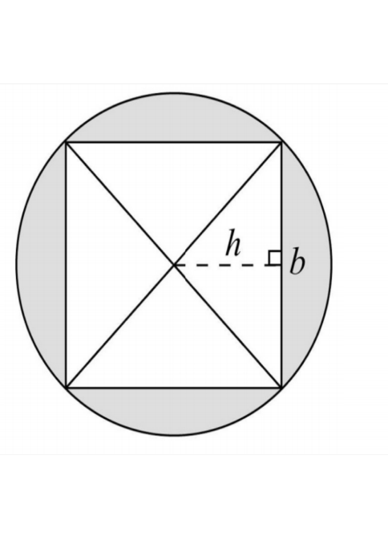
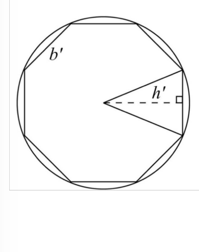

π is the ratio of the circumference of a circle to its diameter. It is called an irrational number because it cannot be written as a fraction and its digits go on forever. This has made it tricky to determine its exact value.
The earliest known approximation of π dates back to ancient civilizations.<\p>
| Source | Approximation Formula | Absolute Error | Percentage Error |
|---|---|---|---|
| Giza, Egypt (2500 BC) | π ≈ \(\frac{256}{81}\) | - | - |
| Ahmes, Egypt (1550 BC) | π ≈ \(\frac{22}{7}\) | - | - |
| Babylonian Mathematicians (1900 BC) | π ≈ \(3 + \frac{1}{8}\) | - | - |
| Yajnavalkya, India (900 BC) | π ≈ \(\sqrt{10}\) | - | - |
| Ptolemy (90 AD) | π ≈ \(\frac{377}{120}\) | - | - |
The Babylonians used the value 3.125, while the Egyptians approximated it as 3.1605 based on geometric calculations. Archimedes refined this further by using a 96-sided polygon to estimate that:
3.1408 < π < 3.1429This was one of the most accurate approximations of π for centuries and laid the foundation for future mathematicians.
Archimedes, one of the greatest minds of antiquity, approached the problem of approximating π with remarkable ingenuity.

If an inscribed square has sides of length b and the distance from the center of the circle to the midpoint of each side is h, then by considering the square as composed of four triangles, its area can be determined as:
A = 1/2 × P × hwhere P is the perimeter of the square.

By doubling the number of sides, an octagon can be inscribed. The area of the octagon follows the same formula:
A' = 1/2 × P' × h'As this process continues indefinitely, the perimeters of these polygons approach the circumference C of the circle, and their height approximates the radius r. This leads to the famous equation:
A = 1/2 × C × rSince the ratio of a circle's circumference to its diameter is constant, we define:
C / D = πor equivalently:
C = π × 2rSubstituting this into the previous formula:
A = 1/2 × 2πr × rSimplifying, we arrive at the well-known equation:
A = πr²Archimedes developed a systematic algorithm to approximate π by increasing the number of sides of an inscribed polygon. If he had enough time, he could have calculated π to far more decimal places than a modern handheld calculator displays.
According to legend, Archimedes met his end when the Roman armies of Marcellus captured Syracuse. While working on a geometric problem, a soldier interrupted him. Archimedes, engrossed in his calculations, asked the soldier to wait. The enraged soldier then killed him, highlighting a stark contrast between Greek intellectualism and Roman militarism.
Today, Archimedes' influence remains immortalized in the inscription around his image on the Fields Medal:
"Transire suum pectus mundoque potiri" (Rise above oneself and grasp the world).
π has an amazing property to appear in the most unexpected situations